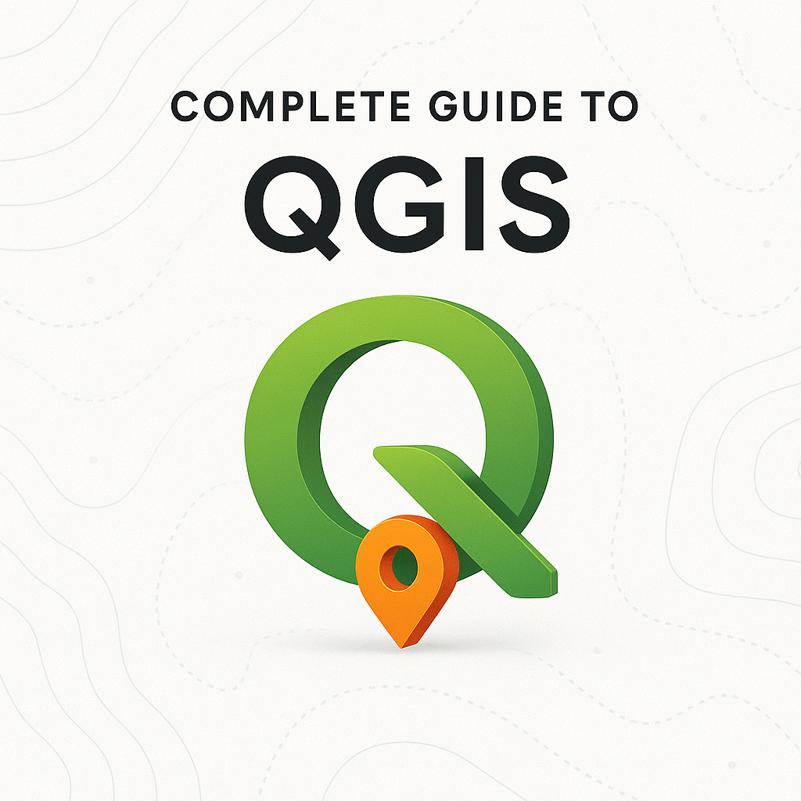
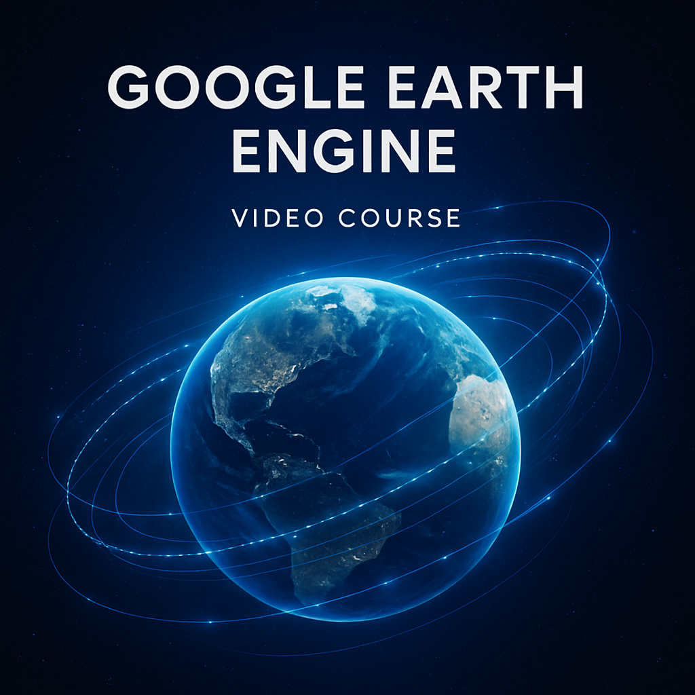

Recensement & délimitation
Préparation et mise à jour de zones de dénombrement (ZD) pour le RGPH3, à partir de données géographiques et administratives — expérience INSEED.
Thématiques : analyse spatiale, délimitation, cartographie de support
Géomaticien et développeur SIG. Enseignant missionnaire à l'Université de Mongo (webmapping et entrepreneuriat). J'accompagne la transformation des données en décisions par l'analyse spatiale, la modélisation et le développement géospatial — également formateur et créateur de contenus éducatifs.
Profil professionnel (aligné sur le CV)
Géomaticien et développeur SIG. Enseignant missionnaire à l'Université de Mongo en webmapping et entrepreneuriat. J'aide à transformer les données en décisions grâce à l'analyse spatiale, la modélisation d'infrastructures et le développement géospatial. Créateur de contenu éducatif.
Parcours universitaire en géographie et en cartographie / télédétection / SIG appliqués à la gestion durable des territoires (Université de Douala, puis Université de Yaoundé I). Le CV indique une finalisation académique en cours pour le master en géomatique appliquée — les précisions administratives figurent sur le document PDF.
Langues : français (courant), anglais (débutant), arabe local (courant).
Webmapping et entrepreneuriat en géomatique à l'Université de Mongo
Cartes thématiques et interactives, délimitation et analyse spatiale
Formateur SIG, télédétection et cartographie ; création de ressources pédagogiques
Synthèse alignée sur le CV (outil par outil)
Maîtrise des logiciels SIG ; expertise en télédétection avancée (images satellites et aériennes, analyse multi-temporelle).
Backend, frontend et applications géospatiales et cartographiques web sur mesure.
Expérience des chaînes mobiles ; capacité à concevoir des dispositifs de collecte adaptés au projet.
Analyse spatiale avancée ; intégration de l'IA dans les processus géospatiaux pour l'automatisation et l'appui à la décision.
Expériences et diplômes tels que portés sur le CV
Enseignant missionnaire — enseignement en webmapping et entrepreneuriat en géomatique.
Le CV mentionne une finalisation académique en cours pour le master en géomatique appliquée ; statut exact selon attestation universitaire.
Missions et thématiques décrites sur le CV (institutions, recensement, recherche)
Les références professionnelles et le CV détaillé sont disponibles sur demande ; les contacts des référents figurent dans la section « Références » ci-dessous.
Préparation et mise à jour de zones de dénombrement (ZD) pour le RGPH3, à partir de données géographiques et administratives — expérience INSEED.
Thématiques : analyse spatiale, délimitation, cartographie de support
Coordination d'enquêtes (accès à la terre, production agricole ; migration et recomposition socio-spatiale), supervision d'enquêteurs, collecte numérique et analyse.
Zones : province du Lac (Mamdi, Fouli, Kaya), Tchad
Traitement d'images satellitaires et aériennes, Google Earth Engine, solutions webmapping ; enseignement à l'Université de Mongo et missions pédagogiques (CECISIG).
Outils : GEE, Geemap, stack SIG et développement web
Parcours d'apprentissage proposés en ligne ; le détail des contenus figure sur les pages de vente.
Ensemble de formations et de ressources regroupés ; modalités et contenus détaillés sur la page Gumroad.

Document PDF pour progresser sur QGIS avec des exercices pratiques ; précisions sur la page Gumroad.

Parcours sur Google Earth Engine et Python pour l'analyse environnementale ; durée et modules précisés sur Gumroad.
Personnes désignées comme référentes sur le curriculum vitæ
Géographe, expert associé à la CBLT — spécialiste du foncier agricole.
Informaticien — géomaticien.
Le CV mentionne également un contact au ministère de l'Eau et de l'Énergie (profil économiste / data) ; coordonnées complètes à reprendre sur votre exemplaire signé du CV si besoin.
Discutons de votre projet ou de vos besoins en formation
Que vous ayez besoin d'une expertise en géomatique, d'une formation sur mesure ou du développement d'une solution SIG, je suis à votre écoute pour vous accompagner.